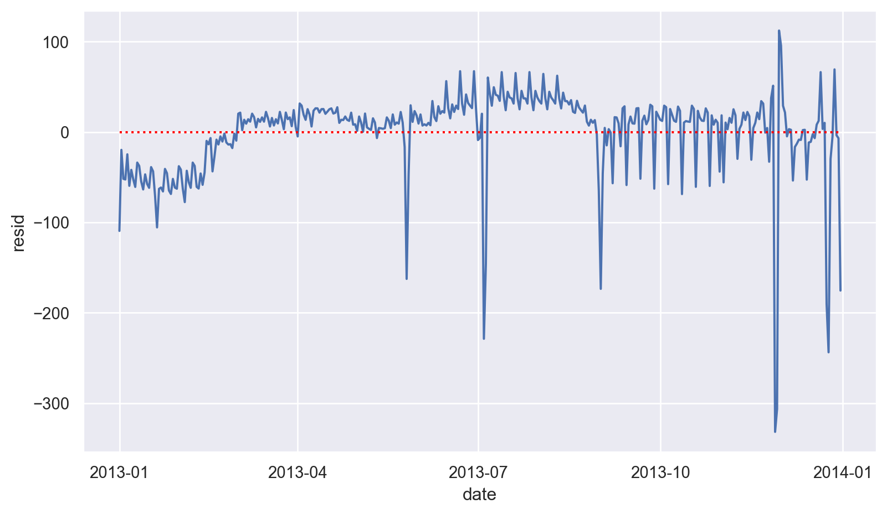
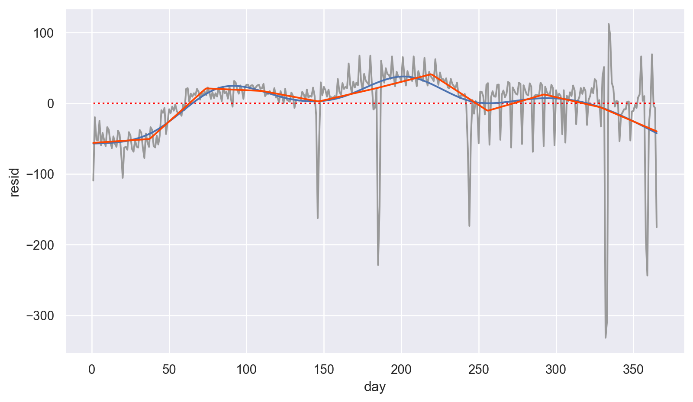
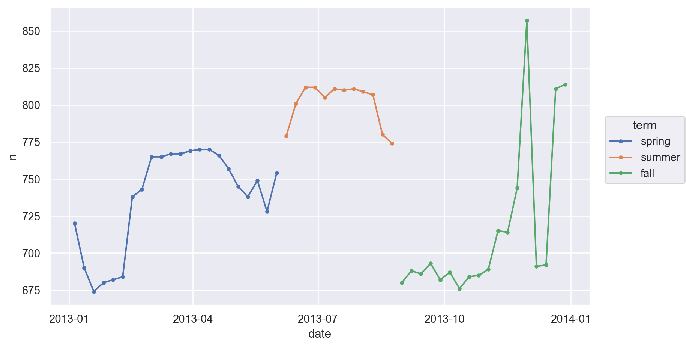
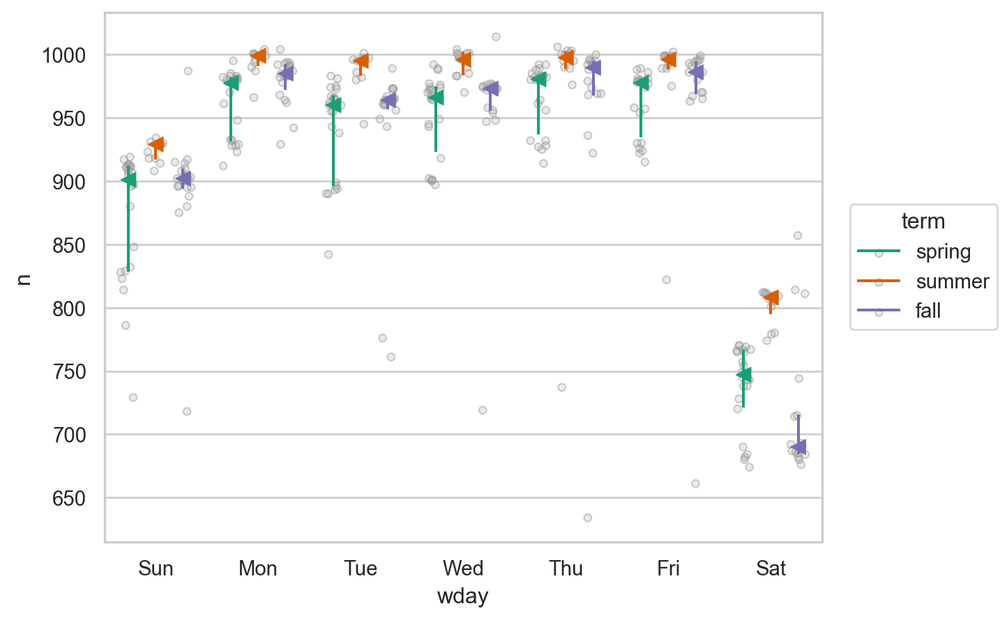
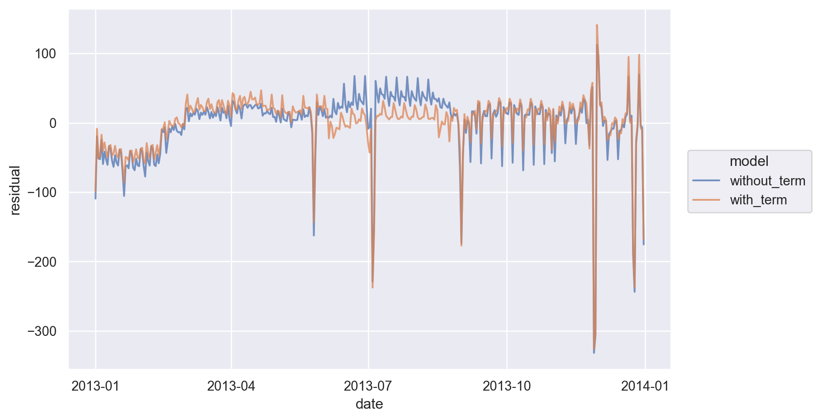

Load Packages
# numerical calculation & data frames
import numpy as np
import pandas as pd
# visualization
import matplotlib.pyplot as plt
import seaborn as sns
import seaborn.objects as so
# statistics
import statsmodels.api as smR for Data Science by Wickham & Grolemund
# numerical calculation & data frames
import numpy as np
import pandas as pd
# visualization
import matplotlib.pyplot as plt
import seaborn as sns
import seaborn.objects as so
# statistics
import statsmodels.api as sm# pandas options
pd.set_option("mode.copy_on_write", True)
pd.options.display.precision = 2
pd.options.display.float_format = '{:.2f}'.format # pd.reset_option('display.float_format')
pd.options.display.max_rows = 7
# Numpy options
np.set_printoptions(precision = 2, suppress=True)flights = sm.datasets.get_rdataset('flights', 'nycflights13').data# make dates from year, month, day
flights["date"] = pd.to_datetime(flights[["year", "month", "day"]])daily = flights.groupby("date").size().reset_index(name="n")
daily date n
0 2013-01-01 842
1 2013-01-02 943
2 2013-01-03 914
.. ... ...
362 2013-12-29 888
363 2013-12-30 968
364 2013-12-31 776
[365 rows x 2 columns](
so.Plot(daily, x='date', y='n')
.add(so.Line())
.layout(size=(8.5, 5))
)항공편의 개수는 요일에 따른 효과가 크게 미치기 때문에 우선 요일의 효과를 살펴보면서 장기간의 트렌드를 이해하고자 함
# add a column for the day of the week
daily["wday"] = (
daily["date"]
.dt.day_name()
.str[:3]
.astype("category")
.cat.set_categories(["Sun", "Mon", "Tue", "Wed", "Thu", "Fri", "Sat"])
)daily date n wday
0 2013-01-01 842 Tue
1 2013-01-02 943 Wed
2 2013-01-03 914 Thu
.. ... ... ...
362 2013-12-29 888 Sun
363 2013-12-30 968 Mon
364 2013-12-31 776 Tue
[365 rows x 3 columns]from sbcustom import boxplot
boxplot(daily, "wday", "n", alpha=.5)매우 강한 주말 효과를 제거하기 위해 모델을 만들어 residuals을 얻음
from statsmodels.formula.api import ols
# 또는 import statsmodels.formula.api as smf
mod = ols("n ~ wday", data=daily).fit()wday = pd.Categorical(
["Sun", "Mon", "Tue", "Wed", "Thu", "Fri", "Sat"],
categories=["Sun", "Mon", "Tue", "Wed", "Thu", "Fri", "Sat"],
)
grid = pd.DataFrame({"wday": wday})grid["pred"] = mod.predict(grid)
grid
daily.groupby("wday")["n"].mean() wday pred
0 Sun 891.48
1 Mon 974.81
2 Tue 951.36
3 Wed 962.69
4 Thu 965.75
5 Fri 967.46
6 Sat 744.62wday
Sun 891.48
Mon 974.81
Tue 951.36
Wed 962.69
Thu 965.75
Fri 967.46
Sat 744.62
Name: n, dtype: float64(
boxplot(daily, "wday", "n", alpha=.5)
.add(so.Dot(color="blue", marker="<"), x=grid.wday, y=grid.pred)
)Residuals: 요일의 효과를 제거한 후의 날짜와 항공편의 개수의 관계
# add a column of residuals from mod
daily["resid"] = mod.resid(
so.Plot(daily, x='date', y='resid')
.add(so.Line())
.add(so.Line(color="red", linestyle=":"), so.Agg(lambda x: 0))
.layout(size=(8.5, 5))
)
(
so.Plot(daily, x='date', y='resid', color="wday")
.add(so.Line())
.add(so.Line(color=".6", linestyle=":"), so.Agg(lambda x: 0))
.layout(size=(8.5, 5))
)토요일의 패턴을 잡아내지 못했음:
토요일 여름에 모델의 기대치보다(즉, 토요일 1년 평균보다) 더 많은 항공편이 있고, 가을에는 반대로 더 적은 항공편이 있음. 뒤에 이를 고려한 새로운 모델을 세워 봄
daily.query('resid < -100') date n wday resid
0 2013-01-01 842 Tue -109.36
19 2013-01-20 786 Sun -105.48
145 2013-05-26 729 Sun -162.48
184 2013-07-04 737 Thu -228.75
185 2013-07-05 822 Fri -145.46
243 2013-09-01 718 Sun -173.48
331 2013-11-28 634 Thu -331.75
332 2013-11-29 661 Fri -306.46
357 2013-12-24 761 Tue -190.36
358 2013-12-25 719 Wed -243.69
364 2013-12-31 776 Tue -175.36미국 공휴일에 해당하는 날들인 보임: 새해, 독립기념일(7/4), 추수감사절, 크리스마스 등등
so.Polyfit(5)을 이용해 시각화해보면(
so.Plot(daily, x='date', y='resid')
.add(so.Line(color=".5"))
.add(so.Line(), so.PolyFit(5))
.add(so.Line(color="red", linestyle=":"), so.Agg(lambda x: 0))
.layout(size=(8.5, 5))
)다항함수 fit 보다 좀 더 flexible한 natural spline으로 fit을 하면,
patsy 패키지의 cr 함수를 이용: spline regression
# 일년 중 몇 일째인지 수치형 변수로 추가
daily["day"] = daily["date"].dt.day_of_yearfit_spline = ols("resid ~ cr(day, df=10)", data=daily).fit()
daily["ns_fitted"] = fit_spline.fittedvaluesNatual spline은 일반적인 B-splines에 비해 양 끝단에서 flat하도록 제한을 둔 것
General B-splines의 예
다음은 1차 함수(degree=1) 즉, 직선의 10개(df=10)로 나누어진 piecewise polynomial로 fit,
fit_bspline = ols("resid ~ bs(day, df=10, degree=1)", data=daily).fit()
daily["bs_fitted"] = fit_bspline.fittedvaluesdaily.head(7) date n wday resid day ns_fitted
0 2013-01-01 842 Tue -109.36 1 -56.91
1 2013-01-02 943 Wed -19.69 2 -56.86
2 2013-01-03 914 Thu -51.75 3 -56.80
3 2013-01-04 915 Fri -52.46 4 -56.75
4 2013-01-05 720 Sat -24.62 5 -56.68
5 2013-01-06 832 Sun -59.48 6 -56.61
6 2013-01-07 933 Mon -41.81 7 -56.54p = (
so.Plot(daily, x='day', y='resid')
.add(so.Line(color=".6"))
.add(so.Line(color="red", linestyle=":"), so.Agg(lambda x: 0))
.add(so.Line(), x=daily.day, y=daily.ns_fitted) # predicted line by natural spline model
.layout(size=(8.5, 5))
)
p겨울에 좀 적으며, 여름에 많음: 여러 해의 데이터가 있다면 이 패턴을 구체화 할 수 있으나 2013년의 데이터만 있으므로 우리의 지식에 의존해서 설명해 볼 수 밖에 없음
참고로 위에서 언급한 B-splines를 이용한 모델에 의한 예측값을 추가로 그리면,
# predicted line by B-spline model
fit_bspline = ols("resid ~ bs(day, df=10, degree=1)", data=daily).fit()
daily["bs_fitted"] = fit_bspline.fittedvalues
p.add(so.Line(color="orangered"), x=daily.day, y=daily.bs_fitted)
위의 첫번째 부분, 즉 토요일에 대해 나타나는 패턴을 잡아내기 위해
(
so.Plot(daily.query('wday == "Sat"'), x='date', y='n')
.add(so.Line(marker="."))
.layout(size=(8.5, 5))
)여름에는 토요일에 여행하는 걸 마다하지 않는 것은 아마도 여름 방학이나 휴가철이라 그런 것일 듯,
state’s school terms: summer break in 2013 was Jun 26–Sep 9
가을에 토요일 항공편이 적은 것은 미국에서는 추수감사절이나 크리스마스와 같은 큰 공휴일들이 있어 가족여행을 계획하지 않는다고 하는데 추측해 볼 뿐임.
대략 3개의 school terms으로 나누어 우리의 추측을 확인해보고자 함
dates_cut = pd.to_datetime(["2013-01-01", "2013-06-05", "2013-08-25", "2014-01-01"])
# cut의 나눌 위치를 직접 지정
daily["term"] = pd.cut(
daily["date"], dates_cut, right=False, labels=["spring", "summer", "fall"]
)(
so.Plot(daily.query('wday == "Sat"'), x='date', y='n', color="term")
.add(so.Line(marker="."))
.layout(size=(8.5, 5))
)
이 term 변수가 토요일이 아닌 다른 요일에는 어떻게 작용하는지 살펴보면
boxplot(daily, x="wday", y="n", color="term", alpha=.5)
3개의 term에 따라 각 요일에서의 항공편의 개수가 큰 차이가 나는 것으로 보이며, 그 패턴이 요일마다 다른 것으로 보이므로, 각 term에 따라 요일의 효과를 분리해서 보는 것이 타당해보임.
앞에서 탐색한 결과를 바탕으로, 하루에 출항하는 항공편의 개수를 예측하는데
mod1)과mod2)을 세워 비교해보면,mod1 = ols("n ~ wday", data=daily).fit() # 요일로만 예측
mod2 = ols("n ~ wday * term", data=daily).fit() # 요일과 term, 그리고 요일과 term의 interaction으로 예측from patsy import dmatrices
y, X = dmatrices("n ~ wday * term", data=daily, return_type="dataframe")
X.columnsIndex(['Intercept', 'wday[T.Mon]', 'wday[T.Tue]', 'wday[T.Wed]', 'wday[T.Thu]',
'wday[T.Fri]', 'wday[T.Sat]', 'term[T.summer]', 'term[T.fall]',
'wday[T.Mon]:term[T.summer]', 'wday[T.Tue]:term[T.summer]',
'wday[T.Wed]:term[T.summer]', 'wday[T.Thu]:term[T.summer]',
'wday[T.Fri]:term[T.summer]', 'wday[T.Sat]:term[T.summer]',
'wday[T.Mon]:term[T.fall]', 'wday[T.Tue]:term[T.fall]',
'wday[T.Wed]:term[T.fall]', 'wday[T.Thu]:term[T.fall]',
'wday[T.Fri]:term[T.fall]', 'wday[T.Sat]:term[T.fall]'],
dtype='object')daily = daily.assign(
without_term = mod1.resid,
with_term = mod2.resid,
)daily date n wday resid day ns_fitted bs_fitted term \
0 2013-01-01 842 Tue -109.36 1 -56.91 -55.93 spring
1 2013-01-02 943 Wed -19.69 2 -56.86 -55.78 spring
2 2013-01-03 914 Thu -51.75 3 -56.80 -55.63 spring
.. ... ... ... ... ... ... ... ...
362 2013-12-29 888 Sun -3.48 363 -39.96 -37.80 fall
363 2013-12-30 968 Mon -6.81 364 -41.10 -38.74 fall
364 2013-12-31 776 Tue -175.36 365 -42.24 -39.68 fall
without_term with_term
0 -109.36 -98.26
1 -19.69 -8.64
2 -51.75 -51.36
.. ... ...
362 -3.48 -7.00
363 -6.81 -11.26
364 -175.36 -167.58
[365 rows x 10 columns]daily_models = daily.melt(id_vars=["date"], value_vars=["without_term", "with_term"], var_name="model", value_name="residual")(
so.Plot(daily_models, x='date', y='residual', color="model")
.add(so.Line(alpha=.75))
.layout(size=(8, 5))
)
Interaction이 있는 모델이 약간 나아보이나 좀 더 살펴보고자, 원래의 데이터와 함께 플랏을 그려보면,
(
boxplot(daily, x="wday", y="n")
.add(so.Dot(), so.Agg())
.facet("term")
.layout(size=(9.5, 6))
)
이상치(ourliers)가 많아 평균(mean)의 값이 중앙값 (median)보다 많이 내려와 있는 경향을 보이고 있음.
이는 이상치가 모델에 큰 영향을 미치기 때문인데, 이상치의 영향을 줄이는 방법 중에 하나인 robust regression 모형 (mod3)을 세워 해결해보면,
# Robust Linear Model (RLM) in statsmodels
mod3 = sm.RLM.from_formula("n ~ wday * term", data=daily).fit()wday_grid = np.array(["Sun", "Mon", "Tue", "Wed", "Thu", "Fri", "Sat"])
term_grid = np.array(["spring", "summer", "fall"])
# make a grid of wday and term
from itertools import product
grid = pd.DataFrame(
list(product(wday_grid, term_grid)),
columns=["wday", "term"],
)
grid wday term
0 Sun spring
1 Sun summer
2 Sun fall
.. ... ...
18 Sat spring
19 Sat summer
20 Sat fall
[21 rows x 2 columns]# mod2: ols("n ~ wday * term", data=daily)
grid["interaction_ols"] = mod2.predict(grid[["wday", "term"]])
# mod3: robust mod2
grid["interaction_rlm"] = mod3.predict(grid[["wday", "term"]])grid wday term interaction_ols interaction_rlm
0 Sun spring 872.23 893.50
1 Sun summer 923.91 923.91
2 Sun fall 895.00 900.09
.. ... ... ... ...
18 Sat spring 737.32 746.82
19 Sat summer 800.92 801.22
20 Sat fall 716.00 696.90
[21 rows x 4 columns]daily_median = daily.groupby(["wday", "term"])["n"].median().reset_index(name="median")grid = grid.merge(daily_median, on=["wday", "term"])
grid wday term interaction_ols interaction_rlm median
0 Sun spring 872.23 893.50 901.00
1 Sun summer 923.91 923.91 929.00
2 Sun fall 895.00 900.09 902.00
.. ... ... ... ... ...
18 Sat spring 737.32 746.82 747.00
19 Sat summer 800.92 801.22 808.00
20 Sat fall 716.00 696.90 690.00
[21 rows x 5 columns]grid_long = grid.melt(id_vars=["wday", "term"], value_vars=["interaction_ols", "interaction_rlm", "median"], var_name="model", value_name="n")
grid_long wday term model n
0 Sun spring interaction_ols 872.23
1 Sun summer interaction_ols 923.91
2 Sun fall interaction_ols 895.00
.. ... ... ... ...
60 Sat spring median 747.00
61 Sat summer median 808.00
62 Sat fall median 690.00
[63 rows x 4 columns](
so.Plot(grid_long, x='wday', y='n', color="model")
.add(so.Dot(edgecolor="w", pointsize=8))
.facet("term")
.layout(size=(8, 5))
)
Final model
mod3 = sm.RLM.from_formula("n ~ wday * term", data=daily).fit()
mod3.paramsIntercept 893.50
wday[T.Mon] 72.65
wday[T.Tue] 59.34
wday[T.Wed] 66.27
wday[T.Thu] 77.63
wday[T.Fri] 73.70
wday[T.Sat] -146.68
term[T.summer] 30.40
term[T.fall] 6.58
wday[T.Mon]:term[T.summer] -1.92
wday[T.Tue]:term[T.summer] 6.69
wday[T.Wed]:term[T.summer] 2.32
wday[T.Thu]:term[T.summer] -7.51
wday[T.Fri]:term[T.summer] -5.57
wday[T.Sat]:term[T.summer] 23.99
wday[T.Mon]:term[T.fall] 8.89
wday[T.Tue]:term[T.fall] 1.72
wday[T.Wed]:term[T.fall] 1.21
wday[T.Thu]:term[T.fall] 3.82
wday[T.Fri]:term[T.fall] 8.65
wday[T.Sat]:term[T.fall] -56.51
dtype: float64(
so.Plot(grid, x='wday', y='interaction_rlm', color="term")
.add(so.Line(marker="."))
.layout(size=(7, 5))
)Residuals for mod3
daily["with_term_rlm"] = mod3.residdaily_models = daily.melt(
id_vars=["date"],
value_vars=["with_term", "with_term_rlm"],
var_name="model",
value_name="residual",
)daily_models date model residual
0 2013-01-01 with_term -98.26
1 2013-01-02 with_term -8.64
2 2013-01-03 with_term -51.36
.. ... ... ...
727 2013-12-29 with_term_rlm -12.09
728 2013-12-30 with_term_rlm -13.63
729 2013-12-31 with_term_rlm -185.15
[730 rows x 3 columns](
so.Plot(daily_models, x='date', y='residual', color="model")
.add(so.Line())
.layout(size=(8, 5))
)이제 1년에 걸친 장기 트렌드를 더 잘 볼 수 있고, positive한 이상치와 negative한 이상치도 확연히 들어남
# data range for the plot of date vs. n
date_range = pd.date_range("2013-01-01", "2014-01-01", freq="D")mod_spline = sm.RLM.from_formula("n ~ wday * cr(day, df=5)", data=daily).fit()daily["fitted_spline"] = mod_spline.fittedvaluesdaily date n wday resid day fitted term without_term \
0 2013-01-01 842 Tue -109.36 1 -56.91 spring -109.36
1 2013-01-02 943 Wed -19.69 2 -56.86 spring -19.69
2 2013-01-03 914 Thu -51.75 3 -56.80 spring -51.75
.. ... ... ... ... ... ... ... ...
362 2013-12-29 888 Sun -3.48 363 -39.96 fall -3.48
363 2013-12-30 968 Mon -6.81 364 -41.10 fall -6.81
364 2013-12-31 776 Tue -175.36 365 -42.24 fall -175.36
with_term with_term_rlm fitted_spline
0 -98.26 -110.84 865.91
1 -8.64 -16.78 888.63
2 -51.36 -57.14 913.36
.. ... ... ...
362 -7.00 -12.09 885.37
363 -11.26 -13.63 967.40
364 -167.58 -185.15 935.67
[365 rows x 11 columns](
so.Plot(daily, x='date', y='fitted_spline', color="wday")
.add(so.Line(marker="."))
.layout(size=(8.5, 6))
)
Residuals for mod_spline
daily["resid_spline"] = mod_spline.resid(
so.Plot(daily, x='date', y='resid_spline')
.add(so.Line())
.layout(size=(8.5, 5))
)좀 더 복잡한 모델; degree of freedom=10
mod_spline2 = sm.RLM.from_formula("n ~ wday * cr(day, df=10)", data=daily).fit()
daily["fitted_spline2"] = mod_spline2.fittedvalues(
so.Plot(daily, x='date', y='fitted_spline2', color="wday")
.add(so.Line())
.add(so.Dots(color='.5'), y="n")
.layout(size=(8.5, 6))
.facet("term")
.share(x=False)
.layout(size=(12, 6))
)(
so.Plot(daily, x='date', y='fitted_spline', color="wday")
.add(so.Line())
.add(so.Dots(color='.5'), y="n")
.layout(size=(8.5, 6))
.facet("term")
.share(x=False)
.layout(size=(12, 6))
)
n ~ wday + cr(date, df=5)to look like? Knowing what you know about the data, why would you expect it to be not particularly effective?
다음과 같은 Interaction이 있는 모델과 없는 모델을 비교하기 위해 residual plot을 함께 그려본 후 interaction이 없는 모델에서 상대적으로 어떻게 예측이 다른지 살펴보세요.
mod5 = ols("n ~ wday + cr(day, df=5)", data=daily)
mod6 = ols("n ~ wday * cr(day, df=5)", data=daily)n ~ wday * month를 이용해 모델을 세워보고, 이 모델이 어떤 문제를 가지고 있는지 살펴보세요.Forecast use of a city bikeshare system
2011년 1월부터 2012년 12월까지의 자전거 대여 데이터: Kaggle
자전거 대여 수에 영향을 주는 요인들을 살펴보고, 이를 예측하는 모델을 세워보세요.
bikeshare = pd.read_csv("data/bikeshare_train.csv", parse_dates=["datetime"])
bikeshare.head() datetime season holiday workingday weather temp atemp
0 2011-01-01 00:00:00 1 0 0 1 9.84 14.39 \
1 2011-01-01 01:00:00 1 0 0 1 9.02 13.63
2 2011-01-01 02:00:00 1 0 0 1 9.02 13.63
3 2011-01-01 03:00:00 1 0 0 1 9.84 14.39
4 2011-01-01 04:00:00 1 0 0 1 9.84 14.39
humidity windspeed casual registered count
0 81 0.00 3 13 16
1 80 0.00 8 32 40
2 80 0.00 5 27 32
3 75 0.00 3 10 13
4 75 0.00 0 1 1 bikeshare["year"] = bikeshare["datetime"].dt.year
bikeshare["date"] = bikeshare["datetime"].dt.date
bikeshare["day"] = bikeshare["datetime"].dt.day_of_year
bikeshare["time"] = bikeshare["datetime"].dt.time
## a hack to get the day of the year
# bikeshare["datetime"].apply(lambda x: x.replace(year=2000)) # pandas.Timestamp.replacebikeshare datetime season holiday workingday weather temp atemp \
0 2011-01-01 00:00:00 1 0 0 1 9.84 14.39
1 2011-01-01 01:00:00 1 0 0 1 9.02 13.63
2 2011-01-01 02:00:00 1 0 0 1 9.02 13.63
... ... ... ... ... ... ... ...
10883 2012-12-19 21:00:00 4 0 1 1 13.94 15.91
10884 2012-12-19 22:00:00 4 0 1 1 13.94 17.43
10885 2012-12-19 23:00:00 4 0 1 1 13.12 16.66
humidity windspeed casual registered count year date day \
0 81 0.00 3 13 16 2011 2011-01-01 1
1 80 0.00 8 32 40 2011 2011-01-01 1
2 80 0.00 5 27 32 2011 2011-01-01 1
... ... ... ... ... ... ... ... ...
10883 61 15.00 4 164 168 2012 2012-12-19 354
10884 61 6.00 12 117 129 2012 2012-12-19 354
10885 66 9.00 4 84 88 2012 2012-12-19 354
time
0 00:00:00
1 01:00:00
2 02:00:00
... ...
10883 21:00:00
10884 22:00:00
10885 23:00:00
[10886 rows x 16 columns]